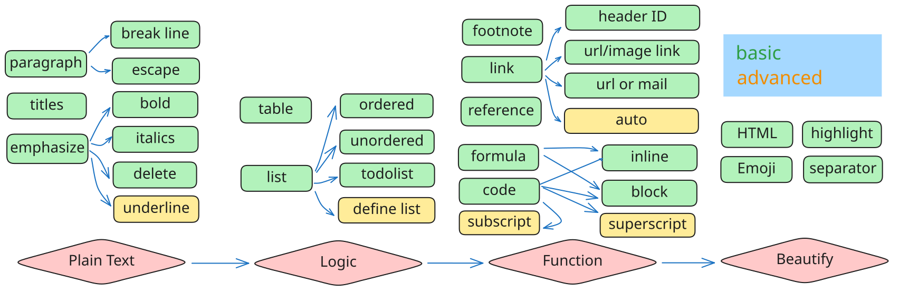

允许我擅自把 markdown 的语法按照一个文档从无到有，从有到好的构建需求分成了四类：
让文档"写"出来
标题除了#的写法，也可以用横线，但是不推荐使用。
Heading level 1
===============
Heading level 2
---------------
换行的三种方式：
<br>Love__is__bold：不起作用！Love**is**bold：这样才行！<u>下划线文本</u>~~世界是平坦的。~~如果要显示*，需要
\*
其他的需要转义的符号：\`*_{}[]<>()#*+-/!|
让文档"有逻辑"
有序列表，序号可以不真的按序号，只要是数字就行
列表可以不真正的排序
1. First item
1. Second item
1. Third item
1. Fourth item
甚至可以是错的
1. First item
8. Second item
3. Third item
5. Fourth item
无需列表可以用+，-，*
可以用-
- First item
- Second item
- Third item
也可以用*
* First item
* Second item
* Third item
或者*
+ First item
+ Second item
+ Third item
这样就是First Term和Second Term分成两大块，内部没有空行的
First Term
: This is the definition of the first term.
Second Term
: This is one definition of the second term.
: This is another definition of the second term.
- [x] Write the press release
- [ ] Update the website
- [ ] Contact the media
表格
| Syntax | Description |
| ----------- | ----------- |
| Header | Title |
| Paragraph | Text |
表格可以不用这么工整
| Syntax | Description |
| --- | --------- |
| Header | Title |
| Paragraph | Text |
表格对齐
| Syntax | Description | Test Text |
| :--- | :----: | ---: |
| Header | Title | Here's this |
| Paragraph | Text | And more |
表格中显示|，需要用|
让文档"跑"起来
除了三个撇号（围栏式），也可以用缩进来表示一个
<html>
<head>
</head>
</html>
图片(普通)

图片(带鼠标悬停显示)

链接(普通)
My favorite search engine is [Google](https://www.google.com/).
链接(带鼠标悬停显示)
My favorite search engine is [Google](https://www.google.com/，"Goto google").
带有链接的图片(就是在图片上边套上链接)
[](https://www.flickr.com/photos/beaurogers/31833779864/in/photolist-Qv3rFw-34mt9F-a9Cmfy-5Ha3Zi-9msKdv-o3hgjr-hWpUte-4WMsJ1-KUQ8N-deshUb-vssBD-6CQci6-8AFCiD-zsJWT-nNfsgB-dPDwZJ-bn9JGn-5HtSXY-6CUhAL-a4UTXB-ugPum-KUPSo-fBLNm-6CUmpy-4WMsc9-8a7D3T-83KJev-6CQ2bK-nNusHJ-a78rQH-nw3NvT-7aq2qf-8wwBso-3nNceh-ugSKP-4mh4kh-bbeeqH-a7biME-q3PtTf-brFpgb-cg38zw-bXMZc-nJPELD-f58Lmo-bXMYG-bz8AAi-bxNtNT-bXMYi-bXMY6-bXMYv)
URL
<https://www.markdownguide.org>
邮箱
<fake@example.com>
第一部分（两种同效果）
[hobbit-hole][1]
[hobbit-hole] [1]
第二部分（七种同效果）
[1]: https://en.wikipedia.org/wiki/Hobbit#Lifestyle
[1]: https://en.wikipedia.org/wiki/Hobbit#Lifestyle "Hobbit lifestyles"
[1]: https://en.wikipedia.org/wiki/Hobbit#Lifestyle 'Hobbit lifestyles'
[1]: https://en.wikipedia.org/wiki/Hobbit#Lifestyle (Hobbit lifestyles)
[1]: <https://en.wikipedia.org/wiki/Hobbit#Lifestyle> "Hobbit lifestyles"
[1]: <https://en.wikipedia.org/wiki/Hobbit#Lifestyle> 'Hobbit lifestyles'
[1]: <https://en.wikipedia.org/wiki/Hobbit#Lifestyle> (Hobbit lifestyles)
首先要在内部生成 ID
### My Great Heading {#custom-id}
然后链接链到 ID
[Heading IDs](#heading-ids)
http://www.example.com
`http://www.example.com`
就是论文中的[1][2]
Here's a simple footnote,[^1] and here's a longer one.[^bignote]
[^1]: This is the first footnote.
[^bignote]: Here's one with multiple paragraphs and code.
Indent paragraphs to include them in the footnote.
`{ my code }`
Add as many paragraphs as you like.
让文档"美"起来
分割横线（注意前后要有空行）
***
---
_________________
Gone camping! :tent: Be back soon.
That is so funny! :joy:
Gone camping! ⛺ Be back soon.
That is so funny! 😂
H~2~O
$$ H_2O $$
like this： H\2\O
X^2^
$$ x^2 $$
like this：X\2\